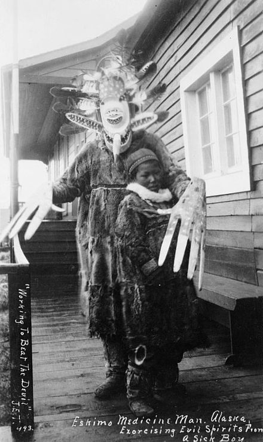

Inuittenes tro

Bildekilde: http://sacred-texts.com/nam/inu/tte/247.jpg
Inuittenes tradisjonelle tro er, i likhet med samenes gamle religion, en sjamanistisk og animalistisk religion. Dette vil si at de trodde på at alle levende og ikke levende ting hadde en sjel. Eksempler på ting Inuittene mente hadde en sjel er for eksempel dyrene, plantene, steinene, sola og månen. Sola, kvinnen Malina, og henens bror, månen, Igaluk, er blant Inuittenes guddommer. Selvom Inuittene hadde noen guder, trodde de ikke på en "allmektig Gud", slik som i for eksempel Kristendommen. De trodde heller ikke, som de gjør i for eksempel Hinduismen, at alle Guder var et utrykk for en allmektig gud eller "verdenssjel". Siden inuittene trodde på at alt hadde en sjel likt menneskenes, var det viktig å vise ordentlig respekt til dyrene man jaktet på. Hvis man ikke gjorde dette kunne sjelene hevne seg.
Den eneste personen som egnet seg til å kontrollere sjelene var Angakkoq, sjamanen, en religiøs figur som dukker opp i en rekke andre naturreligioner, blant annet samenes. Sjamanen var sentral innenfor inuittenes tro. Han kunne hjelpe sitt folk mot onde ånder. Dette fikk han hjelp til av hjelpende ånder. I tillegg til dette kunne han helbrede sykdom, se skjulte ting, og han kunne kommunisere med makter som Havkvinnen. Inntil man trengte angakkoqen levde han et normalt liv sammen med de andre inuittene.
Bildekilde: https://no.wikipedia.org/wiki/Angakkoq#/media/File:Yupik_shaman_Nushagak.jpg
Havkvinnen, også kalt Sedna, er en av gudene i Inuittenes tro. Havkvinnen er havets sjel, og hun hersker over alt som lever i havet. Det er hun som beskytter alt som lever i havet, og det er også hun som setter regler for inuittenes fangst. Hvis noen av jegerne bryter disse reglene, holder hun dyrene borte fra jegerne. Dersom dette skjer må angakkoquen rette opp i dette ved å sette seg i transe og blidgjøre henne. En annen gud innenfor Inuittenes tro er A'akuluujjusi. Hun er Inuittenes skapergud.
Når en Inuitt dør, fortsetter sjelen å leve videre. Sjelen reiser da til underverdenen eller oververdenen. Underverdenen er en verden under vår verden, som man kan få tilgang til ved hjelp av “innganger” i havet og i fjell. Oververdenen er en verden over skyene, som består av et normalt landskap med sjøer, fjell og elver. Inuitter, i kontrast til for eksempel kristendommen, foretrekker underverdenen. Dette er fordi den er rik på mat og varm. Dette er ikke utenkelig, ettersom havet var såpass viktig for inuittenes kosthold og generelt en viktig del av inuittenes kultur.
I likhet med samenes gamle religion har mye av Inuittenes tro forsvunnet. Samenes religion forsvant hovedsakelig på grunn av fornorskningen på 1800-tallet. Her kan vi se noen likhetstrekk med hvordan mye av Inuittenes tro har forsvunnet. Da europeerne kom til områdene Inuittene holdt til på 1700- og 1800-tallet, opplevde Inuittene en rekke sykdommer som europeerne brakte med seg. I tillegg til at mange døde som følge av disse sykdommene, gjennomførte europeerne misjon. Som et resultat av dette tilhører en stor del av dagens Inuitter kristne kirker.
Fun facts: En dvergplanet i vårt solsystem som ble oppdaget i 2003 kalt 90377 Sedna, er oppkalt etter en av Havkvinnens navn, Sedna.

Dvergplaneten Sedna fotografert av Hubble Space Telescope. Bildekilde: https://upload.wikimedia.org/wikipedia/commons/0/02/Sedna_PRC2004-14d.jpg
Kilder:
https://en.wikipedia.org/wiki/Inuit#Traditional_beliefs
http://firstpeoplesofcanada.com/fp_groups/fp_inuit5.html
https://en.wikipedia.org/wiki/Inuit_religion
https://no.wikipedia.org/wiki/Inuittenes_mytologi
https://en.wikipedia.org/wiki/Angakkuq
https://no.wikipedia.org/wiki/Havkvinnen
https://www.religion.dk/viden/de-ti-vigtigste-ting-vide-om-inuit-religion
https://en.wikipedia.org/wiki/Sedna_(mythology)
http://www.nunatsiaqonline.ca/archives/nunavut990930/nunani.html
http://sacred-texts.com/nam/inu/tte/tte1-4.htm
(Web(HTML) versjon av boken "Tales and Traditions of the Eskimo" av Hinrich Rink og Robert Brown.)
Denne teksten er skrevet av Noah M.P.
- Hjem
- -->
- Hvorfor Inuitter?
- -->
- Arbeidsprosess
- -->
- Grunnleggende Fakta
- -->
- Inuittenes tro